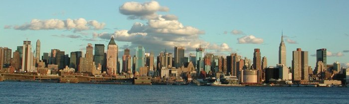

Midtown New York hotels – accommodation with the quality mark
Midtown Manhattan district is the most visited area by tourists. It offers some of the best New York hotels, numerous shopping, commercial, dining and entertaining options, various sites of attraction, such as the Garment District, Murray Hill, Gramercy Park, the Theater District and the area around Times Square. Midtown New York hotels are remarkable for their outstanding recreational and business facilities, spacious rooms and friendly staff, that's why they are widely chosen by leisure travelers as well as those, who come here to work. Several venues of different rates with favorable location are listed below to simplify the choice of every guest:
Radisson Lexington Hotel New York is a 3-star hotel located on Manhattan's fashionable east Midtown - the heart of New York. All guest rooms of the hotel are tastefully decorated in earth tones and come with granite-top work desk, marble bath, hair dryer, ironing facilities, safe, TV, Nintendo games, high speed Internet and many more. The property has 3 fantastic restaurants serving varied cuisines. Newly renovated business and fitness centers as well as high speed Internet in the public areas will be highly appreciated by both business and leisure guests of the hotel.
Dylan, 4-star venue, beneficently set in Midtown Manhattan, offers an unforgettable retreat in the center of New York City, where business guests along with holiday-makers will enjoy top-quality accommodation at a reasonable price. Feel like you are at home in the hotel's elegant and cozy rooms, well-appointed with contemporary furniture and up-to-date equipment. The on-site Benjamin Steakhouse kindly serves traditional American dishes any time you want, providing breakfast, lunch and dinner, including vegetarian and diet meals. Business facilities are presented with a well-stocked business center, comprising free Wi-Fi access, printer and fax. The hotel includes a well-equipped fitness centre, where all guests can work out any time.
The 5-star Lowell Hotel firstly opened its doors to guests in 1927. Its modern, yet classic, architectural lines perfectly match that of its surroundings - Manhattan's famous museums, shops, restaurants, bars and nightclubs that are just few meters away from the property. All 47 individually decorated suites and 21 deluxe rooms feature selected furniture and stylish decor enhanced by enormous space and attention to details. All guests can taste culinary chefs-d'oeuvre from Executive Chef Michael Fred, who combines classic American cooking with the latest Asian or European trends. Business travelers can make use of on-site business center with high-speed Internet access as well as iPods and iPod docking stations upon request. The guests can keep in shape at the fitness center, which is open daily 6.30am to 10pm.
The listed properties don't differ much, though they are rated differently, which is the best evidence that all New York hotels highly value their reputation and guarantee the best service, lodging and facilities for their guests irrespective of the budget and the demands of the latter.